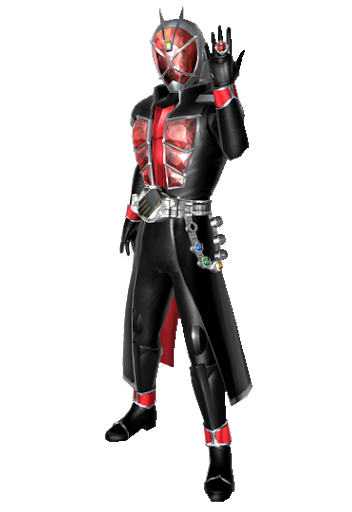

リングギア
「さぁ、ショータイムだ」

・背景
魔法の込められた不思議な指輪型のギアを用いて戦う戦士。
攻撃力の高い火属性、スピードの高い風属性、
回避力の高い水属性、防御力の高い土属性の
4つの属性を駆使して戦う。
絶望を乗り越えたものが使用できるようになり、
人々の絶望を希望に変える魔法使い。
・ボーナス特技
【魔道工学のススメ】【マジックパワー】の限界ＳＬｖに＋１のボーナスを得る。
・クラス解説/オススメ特技

・特技リスト
【スタイルリング/○○】や【マジックリング/○○】と書かれてある特技は、
同名の指輪を手に入れる特技で効果は指輪を指定された時に使用して発揮される効果です。
指輪は合計で2個まで装備でき、行動ターンに付け替えることができる。
指輪の装備枠は装飾品枠とは別の特殊な分類として扱う。
【スタイルリング/○○】は他の【スタイルリング/○○】と同時に使用することはできず、あとからものが有効となる。

名称：【スタイルリング/フレイム】
使用：行動ターン 判定なし 疲労：3
射程：自分 最大：３ CT：なし
効果：炎の魔法使いの力をその身に宿す。
火属性の防護点に「SLv×10」、あらゆる攻撃の致傷力に「SLv*2」のボーナスを得て、
あらゆる攻撃に火属性を追加する。
名称：【スタイルリング/ウォーター】
使用：行動ターン 判定なし 疲労：3
射程：自分 最大：３ CT：なし
効果：水の魔法使いの力をその身に宿す。
冷気属性の防護点に「SLv×10」、〔回避〕にSLv分のボーナスを得て、
あらゆる攻撃に冷気属性を追加する。
名称：【スタイルリング/ハリケーン】
使用：行動ターン 判定なし 疲労：3
射程：自分 最大：３ CT：なし
効果：風の魔法使いの力をその身に宿す。
雷気属性の防護点に「SLv×10」、〔移動〕〔先制〕にSLv分のボーナスを得て、
あらゆる攻撃に雷属性を追加する。
名称：【スタイルリング/ランド】
使用：行動ターン 判定なし 疲労：3
射程：自分 最大：３ CT：なし
効果：土の魔法使いの力をその身に宿す。
「斬撃」「刺突」「衝撃」属性の防護点に「SLv×7」、〔抵抗〕にSLv分のボーナスを得て、
あらゆる攻撃に「斬撃」「刺突」「衝撃」属性のいずれかを追加する。
追加する属性はこの特技使用時に決定する。
名称：【スタイルリング/フレイムドラゴン】
使用：行動ターン 判定なし 疲労：8
射程：自分 最大：３ CT：なし
前提：【スタイルリング/フレイム3】
効果：炎のドラゴンの力をその身に宿す。
火属性の防護点に「SLv×15」、あらゆる攻撃の致傷力に「SLv*5」のボーナスを得て、
あらゆる攻撃に火属性を追加する。
名称：【スタイルリング/ウォータードラゴン】
使用：行動ターン 判定なし 疲労：8
射程：自分 最大：３ CT：なし
前提：【スタイルリング/ウォーター3】
効果：水のドラゴンの力をその身に宿す。
水属性の防護点に「SLv×15」、〔回避〕に「SLv*3」のボーナスを得て、
あらゆる攻撃に冷気属性を追加する。
名称：【スタイルリング/ハリケーンドラゴン】
使用：行動ターン 判定なし 疲労：8
射程：自分 最大：３ CT：なし
前提：【スタイルリング/ハリケーン3】
効果：風のドラゴンの力をその身に宿す。
雷属性の防護点に「SLv×15」、〔移動〕〔先制〕に「SLv*2」のボーナスを得て、
あらゆる攻撃に雷属性を追加する。
名称：【スタイルリング/ランドドラゴン】
使用：行動ターン 判定なし 疲労：8
射程：自分 最大：３ CT：なし
前提：【スタイルリング/ランド3】
効果：土のドラゴンの力をその身に宿す。
「斬撃」「刺突」「衝撃」属性の防護点に「SLv×13」、〔抵抗〕に「SLv*3」のボーナスを得て、
あらゆる攻撃に「斬撃」「刺突」「衝撃」属性のいずれかを追加する。
追加する属性はこの特技使用時に決定する。
名称：【スタイルリング/オールドラゴン】
使用：行動ターン 判定なし 疲労：10
射程：自分 最大：３ CT：なし
前提：【スタイルリング/フレイムドラゴン2】【スタイルリング/ウォータードラゴン2】【スタイルリング/ハリケーンドラゴン2】【スタイルリング/ランドドラゴン2】
効果：全属性のドラゴンの力をその身に宿す。
ずべての防護点に「SLv×20」、すべての致傷力に「SLv×7」、〔回避〕〔抵抗〕に「SLv*4」〔移動〕〔先制〕に〔SLv×3〕のボーナスを得て、
あらゆる攻撃に「火炎」「冷気」「雷撃」属性と
「斬撃」「刺突」「衝撃」属性のいずれかを追加する。
追加する属性はこの特技使用時に決定する。
名称：【マジックリング/キックストライク】
使用：行動ターン 判定：〔命中〕判定（格闘） 疲労：3
射程：2 最大：３ ＣＴ：1ターン
前提：【スタイルリング/○○】
効果：高くジャンプして高所から勢いよく蹴りを放つ。
致傷力に「SLv×15」のボーナスを得て攻撃する。「完全飛行」状態の対象にも攻撃可能だが、
その場合はボーナスが「SLv×8」になる。
名称：【マジックリング/ビッグ】
使用：支援ターン 判定：なし 疲労：5
射程：自身 最大：3 ＣＴ：次のターン
効果：武器や体の一部を巨大化させる。
このターンに行う「近接」攻撃の致傷力に「SLv×2」のボーナスを得て、
対象を攻撃対象からSLv分の射程内の全てに変更する。
名称：【マジックリング/コネクト】
使用：支援ターン 判定：なし 疲労：7
射程：5 最大：1 ＣＴ：戦闘終了
効果：空間をつなげる魔法陣を作成し、その間を移動する。
自身が「魔法」「射撃」攻撃を行う場合指定したへクスから攻撃したものとして扱い射程を計算する。
戦闘以外で使用した場合、自分が知っている場所につなげることでアイテムを呼び出すことができる。
人がが入れる大きさではない。
名称：【マジックリング/スリープ】
使用：行動ターン 判定：なし 疲労：3
射程：15 最大：3 ＣＴ：次のターン
効果：対象を眠らせる。
対象は「抵抗-SLv×3」で判定を行い、失敗した場合は「☆睡眠」を受ける。
名称：【マジックリング/スペシャル】
使用：支援ターン 判定：なし 疲労：5
射程：15 最大：3 ＣＴ：戦闘終了
前提：【スタイルリング/フレイムドラゴン】or【スタイルリング/ウォータードラゴン】or【スタイルリング/ハリケーンドラゴン】or【スタイルリング/ランドドラゴン】
効果：ドラゴンの力を顕現させる。
現在使用されているリングの効果によって力を得る。
効果は以下の通り。
フレイムドラゴン：ドラゴンの頭部を顕現させる。【ドラゴンブレス】を使用可能になり、〔命中〕に+3のボーナスを得る。
ウォータードラゴン：ドラゴンの尻尾を顕現させる。【ドラゴンテール】を使用可能になり、水中でも自由に移動可能。
ハリケーンドラゴン：ドラゴンの翼を顕現させる。【ドラゴンウィング】を使用可能になり、飛行状態になる。
ランドドラゴン：ドラゴンの爪を顕現させる。【ドラゴンリッパー】を使用可能になり、「格闘」武器の攻撃力に+5のボーナスを得る。
各追加特技のSLvはこの特技のSLvと同じになる。
名称：【ドラゴンブレス】
使用：行動ターン 判定：〔命中〕判定（魔法） 疲労：10
射程：5(扇形) ＣＴ：戦闘終了
効果：ドラゴンの口からブレスを吐く。
対象に「3D+SLv×（〔知力〕or〔意志〕+10）」の「火炎」属性ダメージを与える。
名称：【ドラゴンテール】
使用：行動ターン 判定：〔命中〕判定（格闘） 疲労：10
射程：1（近接） 最大：3 ＣＴ：戦闘終了
効果：ドラゴンの尻尾で近くにいる敵を薙ぎ払う。
射程内の対象全員は「抵抗-SLv×3」で判定を行い、その後回避判定を行う。
〔抵抗〕判定に失敗している対象は回避判定を行えず、〔移動〕と「冷気」属性の防護点が0になる。
これは「☆バットステータス」として扱わない。
命中した対象に致傷力に「SLv×20」のボーナスを得た「衝撃」「冷気」属性の攻撃を与える。
名称：【ドラゴンウィング】
使用：行動ターン 判定：〔命中〕判定（近接） 疲労：10
射程：移動 最大：3 ＣＴ：戦闘終了
効果：ドラゴンの翼で縦横無尽に飛び回り攻撃する。
移動可能な範囲にいる対象全てに致傷力に「SLv×（自分から対象までの距離+5）」のボーナスを得た攻撃を行う。
対象までの距離は最短ルートで移動妨害を受けないものとして計算する。
名称：【ドラゴンリッパー】
使用：行動ターン 判定：〔命中〕判定（格闘） 疲労：10
射程：1 最大：3 ＣＴ：戦闘終了
効果：ドラゴンの爪で目の前の敵を切り裂く。
対象に〔命中〕に「SLv×2」致傷力に「SLv×30」のボーナス、「斬撃」「刺突」「衝撃」属性を得た攻撃を行う。
名称：【マジックリング/ヴォルケーノ】
使用：行動ターン 判定：〔命中〕判定(魔法) 疲労：7
射程：5(扇型) 最大：3 ＣＴ：次のターン
前提：【スタイルリング/フレイムドラゴン】
効果：前方の敵を烈火の炎で焼き尽くす。
範囲内の対象全てに「3D+SLv×20」の「斬撃」「火炎」属性のダメージを与える。
名称：【マジックリング/サンダー】
使用：行動ターン 判定：〔命中〕判定(魔法) 疲労：7
射程：5(扇型) 最大：3 ＣＴ：次のターン
前提：【スタイルリング/ハリケーンドラゴン】
効果：前方の敵を雷で焼き尽くす。
範囲内の対象全てに「3D+SLv×20」の「刺突」「雷撃」属性のダメージを与える。
名称：【マジックリング/ブリザード】
使用：行動ターン 判定：〔命中〕判定(魔法) 疲労：7
射程：5(扇形) 最大：3 ＣＴ：次のターン
前提：【スタイルリング/ウォータードラゴン】
効果：前方の敵を吹雪で凍らせる。
範囲内の対象全てに「3D+SLv×20」の「衝撃」「冷気」属性のダメージを与える。
名称：【マジックリング/グラビティ】
使用：行動ターン 判定：なし 疲労：7
射程：10 最大：3 ＣＴ：次のターン
効果：対象へクスの重力を操る。
対象から周囲SLｖ内にいるキャラクターは毎ターン開始時に「〔体力〕-SLv×3」の判定を行い、
失敗すると〔移動〕〔回避〕〔先制〕〔命中〕に「-SLv×2」分のペナルティを受ける。
これは「☆バットステータス」として扱わず、次のターンからも行動ターンを消費することで持続する。
名称：【アカシックホイール】
使用：常時 最大：１
効果：ギア製運搬車「アカシックホイール」の操縦技術。（見た目は自由）
この特技を習得することで「アカシックホイール」が使用可能になる。
〔移動〕の基本値が［敏捷］とは無関係に１０になり、所持出来るアイテムの上限数が１０個増加する。
行動ターンを消費することにより乗降を行い、〔移動〕固定効果のオンオフ切り替えが可能。
〔移動〕が固定されるペットを装備しながら【アカシックホイール】に乗ることはできない。
名称：【ホイールアタック】
使用：常時 最大：３
前提：【アカシックホイール】
効果：アカシックホイールに搭乗して巧みに戦闘を行う技術。
物理攻撃の〔命中〕判定と致傷力に「ＳＬｖ×３」のボーナスを得る。
名称：【スリップガード】
使用：常時 最大：１
前提：【アカシックホイール】
効果：アカシックホイールが転倒しないように改造して、「☆転倒」を無効化する。
また、「打撃」「斬撃」「刺突」属性に対する防護点に＋５のボーナスを得る。
名称：【ホイール改造：速度】
使用：常時 最大：３
前提：【アカシックホイール】
効果：アカシックホイールをより速く動けるように改造する。
〔移動〕に「ＳＬｖ×２」のボーナスを得る。
名称：【ジャックナイフ】
使用：〔回避〕判定（ドッジ） 判定：「ドッジ」 疲労：３
射程：自分 最大：３ ＣＴ：次ターン
前提：【アカシックホイール】
効果：アカシックホイールを急速旋回させ、攻撃を回避する。
〔回避〕に「ＳＬｖ×２」のボーナスを得て「ドッジ」を行う。
「ドッジ」成功後、ＳＬｖに等しいヘクス数を「移動妨害」を受けずに移動可能。
名称：【ブーストダッシュ】
使用：支援ターン 判定：なし 疲労：２
射程：自分 最大：１ ＣＴ：なし
前提：【アカシックホイール】
効果：並外れた運転技術により、次のターンまで〔移動〕に＋２のボーナスを得る。
「移動妨害」も受けなくなる。
名称：【ヒットエンドラン】
使用：行動ターン 判定：〔命中〕判定 疲労：６
射程：１（近接） 最大：３ ＣＴ：なし
前提：【アカシックホイール】
効果：アカシックホイールで対象１体に体当たりを仕掛ける特技。
致傷力は「３Ｄ＋体力＋ＳＬｖ×〔移動〕」で「パリイ」「シールド」不可の「打撃」属性ダメージ。
攻撃と同時に〔移動〕そのままの距離を移動可能。
攻撃時に〔移動〕が余った場合、攻撃後に余った分のヘクスを移動可能。
名称：【ホイールキャノン】
使用：行動ターン 判定：〔命中〕判定（銃） 疲労：４
射程：２０（射撃） 最大：３ ＣＴ：なし
前提：【アカシックホイール】
効果：アカシックホイールに取り付けた銃で敵を攻撃する技。
致傷力は「３Ｄ＋ＳＬｖ×２０」の「打撃」属性攻撃。
また、使用者は「斬撃」「刺突」「火炎」「冷気」「電撃」のうち好きな属性１つを
追加することができる。【ホイールキャノン】習得時に決定すること。
名称：【ホイールブラスター】
使用：行動ターン 判定：〔命中〕判定（銃） 疲労：１２
射程：２０（射撃） 最大：１ ＣＴ：戦闘終了
前提：【アカシックホイール】【ホイールキャノン３】
効果：アカシックホイールに取り付けた大口径の主砲で敵陣を攻撃する技。
指定したヘクスから３ヘクス以内の対象全員に【ホイールキャノン３】を使用する。
対象が１体の場合は致傷力に＋５０のボーナスを得る。
名称：【ネバーエンド】
使用：行動終了後 判定：なし 疲労：３
射程：自分 最大：１ ＣＴ：なし
前提：【アカシックホイール】
効果：アカシックホイールが命を持つかのように、使用者の元に舞い戻る特技。
アカシックホイールから降りている場合、即座に搭乗可能。
名称：【ギアサポート/詠唱短縮】
使用：常時 最大：１
前提：【スタイルリング/○○】
効果：スタイルリングを素早く発動できるギアを取得、使用できるようになる。
名称：詠唱短縮ギア（装飾）
効果：【スタイルリング/○○】を支援ターンに使用できる。
【マジックリング/○○】もCT：戦闘終了で支援ターンに使用可能。
名称：【リング高速付け替え】
使用：支援ターン 判定：なし 疲労：1
対象：術者 最大：1 ＣＴ：なし
効果：【スタイルリング/○○】【マジックリング/○○】を素早く付け替える。
名称：【ギアサポート/リング増設】
使用：常時 最大：3
効果：装備できるリングの数をSLv個増やす。
名称：【ギアサポート/魔導工学のススメ】
使用：判定前 判定：なし 疲労：2（4）
対象：術者 最大：1 ＣＴ：なし
前提：【魔導工学のススメ】
効果：【魔導工学のススメ】のボーナスを用いて判定を振る際、
「【魔導工学のススメ】SLv×4」にする。
データ開示を行う場合の合計SLvにもFPを「4」消費して合算可能。
・オススメコース
重点能力・・・
ＣＬ１ ：【】
ＣＬ２ ：【】
ＣＬ３ ：【】
ＣＬ４ ：【】
ＣＬ５ ：【】
ＣＬ６ ：【】
ＣＬ７ ：【】
ＣＬ８ ：【】
ＣＬ９ ：【】
ＣＬ１０：【】
ＣＬ１１：【】
ＣＬ１２：【】
ＣＬ１３：【】
ＣＬ１４：【】